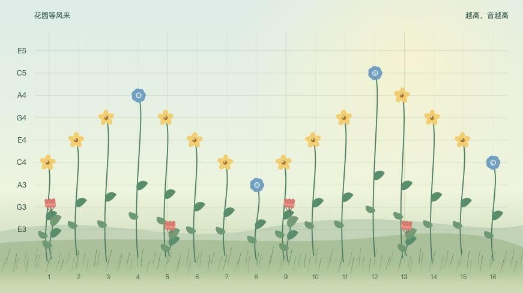
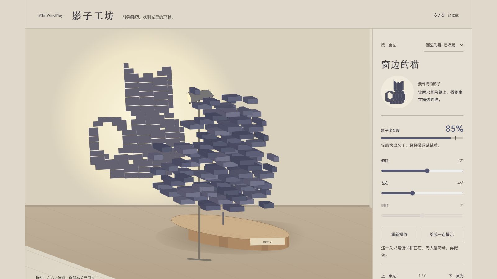
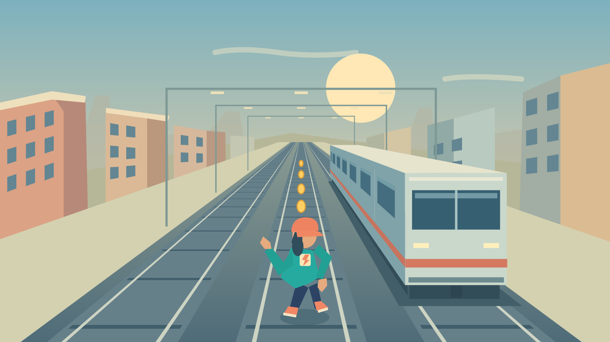
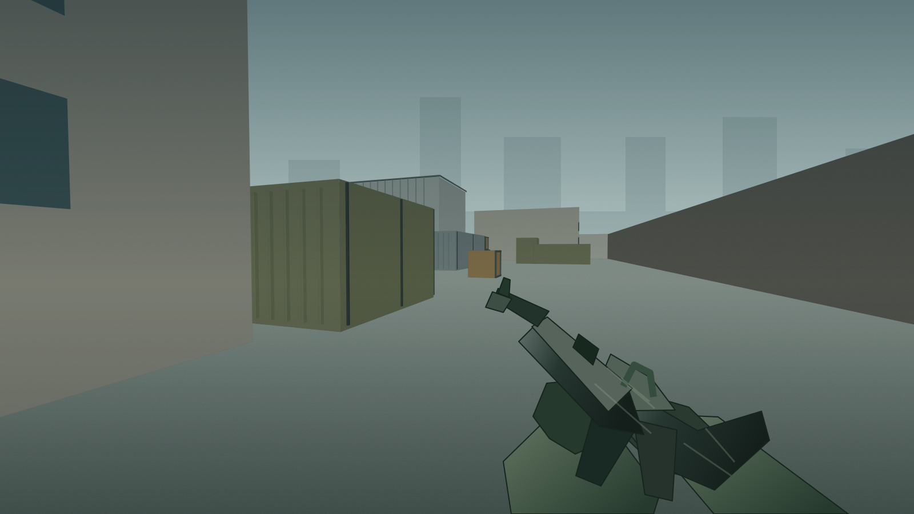

可以玩的作品
一张照片、一段影像，或一个可以探索的世界。
折光之径
空间视错觉解谜十章原创空间解谜。旋转视角连接断桥，收集星光，解开机关，在错位的建筑之间找到归途。
开始旅程余烬地牢
ASCII 地牢探索提灯探索五层字符地牢。选择职业，在迷雾中寻找装备、药水与商人，用回合制战斗带回最后的火种。
点燃灯火
听风花园
音乐玩具种下音符，拖动植物改变旋律。让三种音色随风交织，调整节奏，保存属于自己的音乐花园。
开始演奏
影子工坊
空间解谜旋转立体雕塑，让灯光投出的影子与目标重合。观察、调整、寻找六个藏在光影里的图案。
走进工坊
城市疾跑
3D 跑酷穿行城市轨道，切换三条跑道、跳跃滑铲、跃上车顶。收集金币与道具，挑战更远的距离。
开始奔跑
临界行动
3D 枪战进入第一人称工业园战场，使用步枪、手枪与手雷，瞄准、换弹、利用掩体，应对战术敌人。
进入战场
方块旷野
方块沙盒走进第一人称方块世界，采集资源、制作工具、自由建造，体验创造与生存两种玩法。
进入世界
余烬荒野
荒野生存采集、制作、烹饪与战斗。照顾生命、饥饿和精神，在昼夜交替的荒野里守住营火。
开始生存
点云照片
影像实验把照片变成彩色点阵，或可以旋转、缩放与扰动的三维点云。
打开作品超级马里奥
像素平台冒险重温 FC 初代马里奥的 32 关冒险。跳跃踩怪，顶砖吃蘑菇，穿过地下、水下与城堡，救回公主。
打开作品字间飞行
ASCII 飞行穿行字符构成的高楼、河桥、公园与工业区。调整姿态，穿过高低交错的航门，挑战四条城市航线。
打开作品烟雨江南
园林漫游环绕雨后的江南私家园林，推近梁柱与瓦面，走进堂屋、书房与卧房，看日光渐隐、灯笼亮起。
打开作品在此滚动，切换作品
小实验，慢慢长大。
WindPlay 是听风的浏览器实验室，收集关于图像、声音与交互的想法。
新作品还在酝酿，每一个都值得停下来玩一会儿。